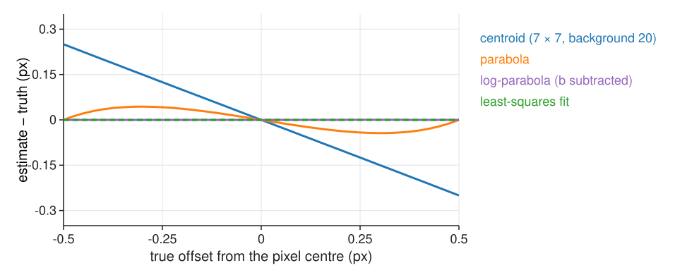
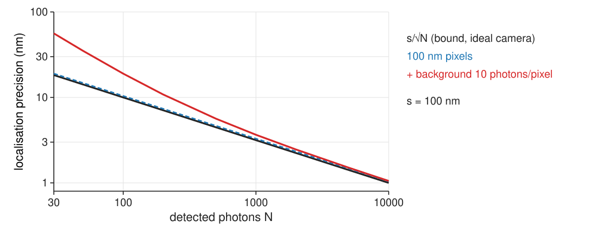

Sub-pixel localisation: centroids, Gaussian fits and the Cramér–Rao bound
Image analysis
About this lecture
A detection so far is a pixel. A spot covers many pixels, and all of them carry information about its centre: we can locate it to a small fraction of a pixel.
The centroid and its bias towards the window centre.
Three-point rules: the parabola (pixel locking) and the log-parabola (exact for a Gaussian).
Fitting a Gaussian model to all pixels: least squares, maximum likelihood.
How precise can it get? About s/\sqrt N for N photons (the Cramér–Rao bound).
What makes it worse: background, pixel size, the wrong model.
Slides titled The math give the formulas and proofs; the ideas are complete without them.
Better than a pixel
The brightest pixel gives the position to ±0.5 px: ±50 nm with 100 nm pixels.
But the spot spreads over 10–20 pixels, and how its light is shared between them tells where the centre is: a spot slightly right of a pixel centre makes the right neighbour brighter than the left one.
Recall FFT registration: the sub-pixel peak of a correlation surface by a parabola or a centroid, and pixel locking. Here the peak is a spot whose shape we know (the PSF), and that changes what works best.
Every detection gets a position and an error bar. Tracking and localisation microscopy need both.
The centroid
The centre of mass of the pixel values in a small window around the brightest pixel: \hat x = \sum_k x_k I_k / \sum_k I_k (and the same for y).
Simple and fast. Exact for a symmetric spot without background, if the window holds the whole spot.
Background pulls it to the window centre: the background’s own centre of mass is the window centre, and it adds weight there.
Noisy pixels at the window edge get large lever arms x_k: a big window is noisy.
Fixes: subtract the background first, keep the window small (± 2σ), re-centre the window on the estimate and repeat.
Worked example (1D, Gaussian of σ = 1, true offset 0.30 px; samples 0.430, 0.956, 0.783 at -1, 0, 1): centroid 0.16. With a background of 0.5 added to each sample: 0.10.
The math: centroid bias
1D window -m, \dots, m around the brightest pixel, a spot of total intensity S centred at \delta (all of it inside the window), plus a background b per pixel:
The estimate is shrunk towards 0 (the window centre) by the factor S/(S + (2m+1)b): the background’s share of the light.
S = 100, \delta = 0.3, b = 5, m = 3: \hat x = 30/135 = 0.22 instead of 0.30.
With noise, the variance grows with \sum_k x_k^2\,\mathrm{Var}(I_k): the edge pixels dominate.
Three-point rules
Use only the brightest pixel and its two neighbours, per axis.
Parabola through the three values: its top is the estimate. Biased towards the pixel centre: pixel locking (recall FFT registration). Example: 0.25 instead of 0.30.
Log-parabola: the logarithm of a Gaussian is a parabola, so a parabola through the logs gives the centre exactly for a Gaussian spot: 0.30. It needs the background subtracted first (with 0.5 added: 0.28).

The math: the three-point Gaussian
Samples c_{-1}, c_0, c_{+1} at -1, 0, 1 of c(x) = A\,e^{-(x-\delta)^2/2s^2}. Then \ln c(x) = \ln A - (x - \delta)^2/2s^2 is a parabola in x with vertex at \delta. The parabola through three points (−1, \ell_{-1}), (0, \ell_0), (1, \ell_{+1}) has its vertex at
Exact for point samples of a Gaussian, for any A and s. On raw values c_i the same formula is the ordinary parabola, which is exact only for a parabola.
Pixel integration (each pixel collects the light over its area) makes it slightly inexact; a background b makes it biased unless b is subtracted first.
Fit the model to all pixels
The model: background + amplitude × Gaussian(x - x_0, y - y_0; \sigma). Adjust (x_0, y_0, A, B) (and σ if unknown) until the model image matches the data: the sum of squared differences is smallest.
For fixed (x_0, y_0, \sigma) the best A, B follow from a straight-line fit (two unknowns, linear).
Only the position (and width) needs iteration: a few Gauss–Newton steps from the brightest pixel or the centroid; the model moves onto the spot.
Check the residual (data − model): it should look like noise. A ring or a second bump means the model is wrong (wrong width, two spots: unit 4).
Weighted least squares, or better maximum likelihood for Poisson counts (weight each pixel by 1/its variance), wins at low photon counts.
Image libraries call this “Gaussian fitting” or “sub-pixel refinement”. A fast non-iterative alternative is the “radial symmetry centre” (one line: the point where the gradient lines meet).
The math: least squares and Gauss–Newton
Minimise F(\boldsymbol\theta) = \sum_k \big(I_k - \mu_k(\boldsymbol\theta)\big)^2, \mu_k = B + A\,g_k(x_0, y_0), \boldsymbol\theta = (x_0, y_0, A, B).
A, B given the position: normal equations of a linear fit, \begin{bmatrix}\sum g_k^2 & \sum g_k\\ \sum g_k & n\end{bmatrix}\begin{bmatrix}A\\B\end{bmatrix} = \begin{bmatrix}\sum g_k I_k\\ \sum I_k\end{bmatrix}.
All parameters: linearise \mu(\boldsymbol\theta + \Delta) \approx \mu(\boldsymbol\theta) + J\Delta with the Jacobian J_{kj} = \partial\mu_k/\partial\theta_j, and solve the linear least-squares problem for \Delta: \Delta = (J^\top J)^{-1}J^\top\mathbf r, \qquad \mathbf r = \mathbf I - \mu(\boldsymbol\theta).
Levenberg–Marquardt: (J^\top J + \lambda\,\mathrm{diag}\,J^\top J)\Delta = J^\top\mathbf r, with λ raised when a step makes F worse.
Pixel-integrated model: g_k is a product of differences of error functions, \tfrac12[\mathrm{erf}(\frac{x_k + 1/2 - x_0}{\sqrt2\sigma}) - \mathrm{erf}(\frac{x_k - 1/2 - x_0}{\sqrt2\sigma})] in each axis.
The math: Poisson maximum likelihood
Photon counts I_k \sim \mathrm{Poisson}(\mu_k(\boldsymbol\theta)), independent. The negative log-likelihood (recall Richardson–Lucy) is, up to a constant,
Its gradient is -\sum_k \frac{I_k - \mu_k}{\mu_k}\,\nabla\mu_k: least squares with each pixel weighted by 1/\mu_k (its variance).
Fisher scoring: \Delta = (J^\top WJ)^{-1}J^\top W\mathbf r with W = \mathrm{diag}(1/\mu_k), i.e. iteratively reweighted least squares.
Bright pixels (spot centre) are noisier in absolute terms and get less weight; least squares gives every pixel the same weight, which is why it loses precision.
Try it: one spot
How precise can it get?
Each detected photon lands at a random place drawn from the PSF (width s). Estimating the spot centre from N photons is like estimating a mean from N samples:
The diffraction limit (≈ 250 nm) is about resolving two points; one isolated point can be localised far better (resolution unit).
No unbiased estimator can beat s/\sqrt N with these data: the Cramér–Rao bound (math slide).
This is the principle of localisation microscopy: switch on a few molecules at a time, localise each to ~10–20 nm, and build the image from the positions.
for every unbiased estimator (Cramér–Rao). The mean of the positions reaches it.
Pixels and background lose information: the Fisher information of a pixelated, noisy image is smaller, and the bound larger (next slide).
Maximum likelihood reaches the bound for large N; least squares does not.
What makes it worse

Pixels: a photon’s position is only known to its pixel (width a): adds a^2/12 to s^2. 100 nm pixels: about 4 % worse.
Background photons carry no position information but add noise. This dominates for dim spots: at 100 photons, 10 background photons per pixel nearly double the error (19 nm instead of 10).
The wrong model: an Airy PSF fitted with a Gaussian costs a little; a defocused or tilted emitter can bias the position.
Least squares has about 16/9 of the bound’s variance (≈ 1.33× its sd); maximum likelihood reaches the bound.
The math: Thompson and Mortensen
Thompson, Larson & Webb (2002), for pixels of size a and b background photons per pixel:
The first term: shot noise of the spot’s own photons. The second: background noise, which falls as 1/N^2.
The demo’s repeats agree with Mortensen’s formulas within a few per cent (checked in the test file).
Try it: precision
Uncertainty as an output
Every detection should carry its error bar: from the formula (with the fitted N and b), or from the curvature of the fit’s objective at its minimum (the inverse Fisher information).
The error bar is per spot: bright spots are precise, dim ones are not. Averaging positions with weights 1/\sigma_i^2 (tracking, drift correction) uses it.
Check that the error bars are honest: repeated measurements of a fixed bead should scatter as predicted.
Summary
The brightest pixel is good to ±0.5 px; using all pixels gets a small fraction of a pixel.
Centroid: simple, pulled to the window centre by background; subtract it, keep the window small.
Parabola: pixel locking. Log-parabola: exact for a Gaussian (after background subtraction).
Fit a Gaussian + background to all pixels; least squares, or maximum likelihood for Poisson counts.
Precision ≈ s/\sqrt N (Cramér–Rao): 1 000 photons and s = 100 nm give about 3 nm. Background (dim spots), large pixels and least squares (×1.33) make it worse.